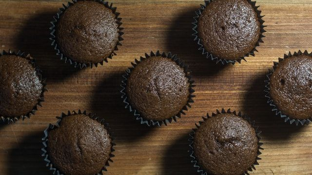

Muffins au chocolat
Préparation: 15 minutes
Cuisson: 16 minutes
Total: 31 minutes
Ingrédients
-
3 t de farine tout usage

-
2/3 t de cacao
-
2 t de sucre
-
6 c. à thé de poudre à pâte
-
1 1/2 c. à thé de sel
-
3 gros oeuf
-
2 t de lait
-
9 c. à soupe de huile végétale
Instructions
Préchauffer le four à 180 °C (350 °F).
Dans un grand bol, tamiser ensemble les ingrédients secs.
- 3 t de farine tout usage
- 2/3 t de cacao
- 2 t de sucre
- 6 c. à thé de poudre à pâte
- 1 1/2 c. à thé de sel
Dans un petit bol, battre l'oeuf puis incorporer au fouet le lait et l'huile.
- 3 gros oeuf
- 2 t de lait
- 9 c. à soupe de huile végétale
Incorporer les ingrédients humides aux ingrédients secs, sans trop les mélanger. Remplir aux 3/4 des moules à muffins graissés.
Cuire au four à 180 °C (350 °F) pendant environ 16 minutes.